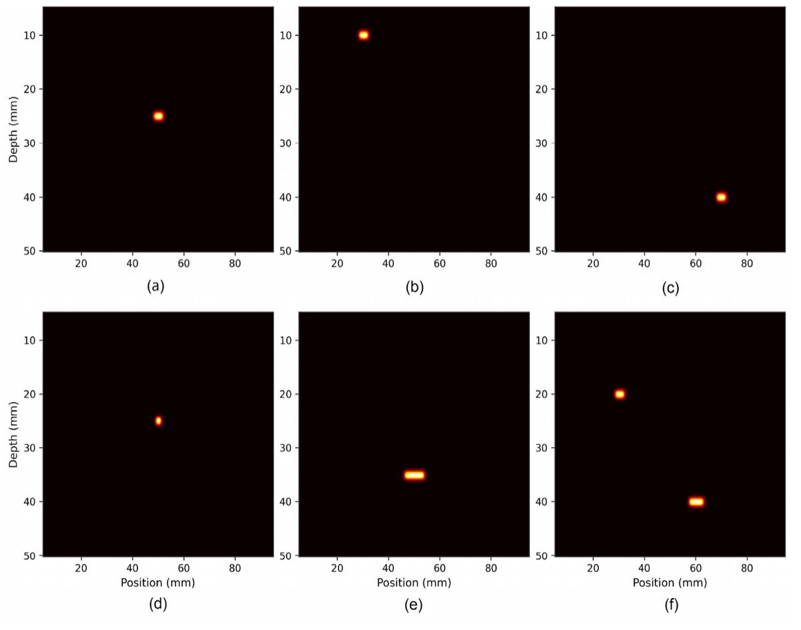
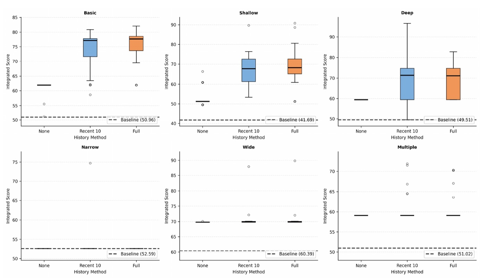

AI agent framework for autonomous improvement of an ultrasonic imaging algorithm
LLM 에이전트가 초음파 영상 알고리즘(SAFT) 코드를 스스로 고치고, 평가기가 고친 것을 받아들이거나 되돌리는 루프를 만든 연구입니다.
An LLM edits the code of an ultrasonic imaging algorithm, the code runs, and an evaluator keeps or rejects each edit. The question was how to set up that loop so the search keeps improving instead of drifting.


6 defect conditionsbasic, shallow, deep, narrow, wide, multiple (simulated aluminium, 3.16 mm wavelength)
3 design questionsasked in sequence: how to score, how many edits per step, how much history
1,080 runs36 conditions × 30 runs, up to 30 iterations each; ~45 s per run

What we found 결과
① Per-item scoresequal or better than one total score on 5 of 6 (not significant)
② One edit per stepbest on 4 of 6; three edits fell to 53.81 on the deep defect vs 68.32
③ Edit historywithout it the search collapsed: last on all 6; in 3 defects every run ended the same (std 0)
Diffraction limit1 mm defect, below the 3.16 mm wavelength: no meaningful gain from the algorithm alone
Integrated score per defect, mean of 30 runs. Darker = larger gain over the original SAFT code; bold = best.
③ History matters most
| defect | baseline | no history | recent 10 | full history |
|---|---|---|---|---|
| Basic | 50.96 | 61.41 | 73.88 | 75.57 |
| Shallow | 41.69 | 52.78 | 67.39 | 69.11 |
| Deep | 49.51 | 59.44 | 68.88 | 68.32 |
| Narrow | 52.59 | 52.59 | 53.33 | 52.83 |
| Wide | 60.39 | 69.81 | 70.56 | 70.62 |
| Multiple | 51.02 | 59.09 | 60.56 | 60.63 |

① Scoring and ② edits per step
① One total score vs per-item scores
| defect | baseline | one total score | per-item scores |
|---|---|---|---|
| Basic | 50.96 | 73.31 | 75.57 |
| Shallow | 41.69 | 66.81 | 69.11 |
| Deep | 49.51 | 67.64 | 68.32 |
| Narrow | 52.59 | 52.70 | 52.83 |
| Wide | 60.39 | 70.02 | 70.62 |
| Multiple | 51.02 | 61.37 | 60.63 |
② Edits per step
| defect | baseline | 1 edit | 2 edits | 3 edits |
|---|---|---|---|---|
| Basic | 50.96 | 75.57 | 71.64 | 71.42 |
| Shallow | 41.69 | 69.11 | 65.68 | 61.16 |
| Deep | 49.51 | 68.32 | 66.24 | 53.81 |
| Narrow | 52.59 | 52.83 | 57.37 | 56.15 |
| Wide | 60.39 | 70.62 | 69.07 | 62.05 |
| Multiple | 51.02 | 60.63 | 65.42 | 60.82 |
What I took from it 배운 것
The loop worked when a verifier and a memory worked together: the evaluator decides what to keep, and the edit history tells the model what has already been tried.